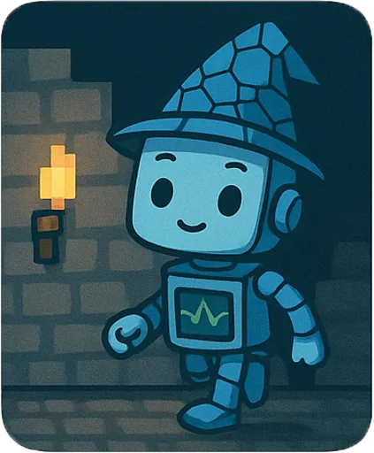

Приложения
Интерактивные демонстрации к занятиям: плитки Вана и подземелье Rogue.
Плитки Вана
Стороны должны совпасть: сначала цвет, потом дороги, трава и общая карта.
Тема №1Подземелье Rogue, 1980
Секторы, комнаты, коридоры и двери. Потом по уровню можно пройтись.
